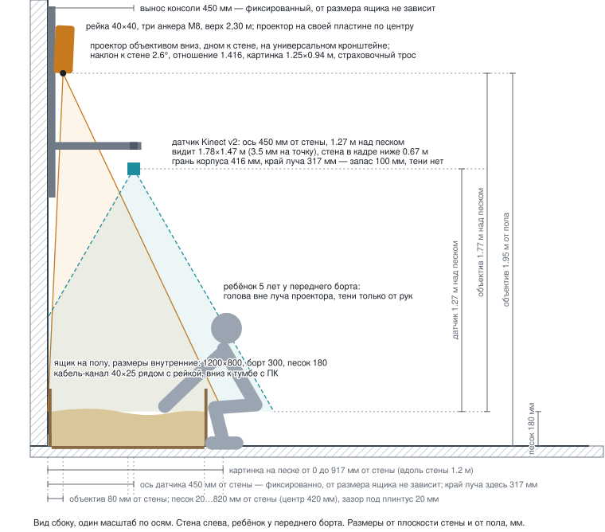

Ящик с песком у стены. Сверху датчик глубины и проектор: ребёнок лепит рельеф руками, а на песок сразу ложится карта — низины синие, горы коричневые, между ними горизонтали. Занятие ведёт специалист.
Короб стоит на полу вплотную к стене — ребёнок играет сидя на корточках или на коленях. К потолку не крепим ничего: в кабинете натяжной потолок. Датчик и проектор висят на стальной рейке, прикрученной к стене анкерами.
| Ящик | 1200 × 800 мм внутри (снаружи 1236 × 836), фанера 18 мм, зазор до стены 20 мм под плинтус |
| Песок | Слой 180 мм — хватает, чтобы копать до дна и не упираться. Поверхность 198 мм от пола. Нужно 173 л, это около 259 кг кварцевого просеянного |
| Борт | 300 мм над дном, верх борта 318 мм от пола. Над песком остаётся свободных 120 мм — песок не выносится наружу. Кромку скругляем, внутренние швы на герметик, углы на уголки, чтобы песок не уходил в стыки |
| Датчик | Ось 450 мм от стены, 1,45 м от пола — это 1,25 м над песком. Вынос фиксированный: над центром ящика датчик резал бы луч проектора |
| Проектор | Объектив 1,95 м от пола и 80 мм от стены, смотрит вниз с наклоном 2,6°. Картинка на песке — от стены до 910 мм, ящик накрыт целиком |
| Крепление | Рейка 40 × 40 на трёх анкерах M8 (1,30–2,30 м), Г-образная консоль под датчик, кронштейн проектора, страховочный тросик |

| Устройство | Зачем нужно | Главное |
|---|---|---|
| Датчик глубины Kinect v2 |
Меряет расстояние до каждой точки песка и отдаёт карту высот. Работает инфракрасным светом, поэтому проекция ему не мешает | 512 × 424 · 70° × 60° зона 1,75 × 1,45 м 3,4 мм на точку USB 3.0 (Intel / Renesas) |
| Проектор | Рисует карту прямо на песке. Висит объективом вниз, геометрию правит программа, а не автотрапеция | XGA или WXGA 3300–4000 лм отношение 1,3–1,6 (рабочее 1,41) игровой режим |
| Компьютер | Принимает карту высот, красит её и отдаёт картинку проектору. Ведёт занятие, пишет видео и отчёт. Берём ноутбук: аккумулятор заменяет источник бесперебойного питания, экран и клавиатура уже есть | ноутбук USB 3.0 напрямую, без хаба HDMI на проектор |
| Короб и крепление | Держат песок и железо. Делаются на месте по чертежу | фанера 18 мм рейка 40 × 40 анкеры M8 |
Ответ на движение руки — цель не больше 150 мс. Из них датчик съедает 60–70, обработка и отрисовка 50–90, проектор в игровом режиме 16–40.
Датчик включается в порт компьютера напрямую, без хабов: на дешёвых хабах и контроллерах AMD он часто не определяется. Все кабели идут в закрытом канале по стене и вдоль плинтуса — в зоне, куда достаёт ребёнок, ни одного открытого провода.
{kind=link}